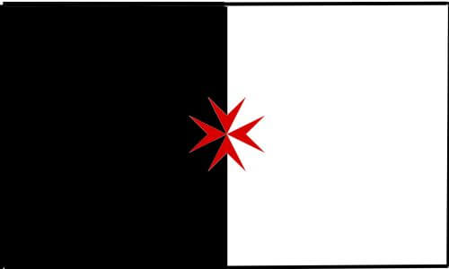

- other Informations
- other Groups OMSTH KTA SMOTJ
History
Historie
Kasaysayan
Histoire
Vergangenheit
-
Templar Knights battle standard
Tempel Riddere kæmpe standard
Templar Knights battle standard
à venir
Tempelritter Kampfstandarte
Templar Knights battle standard [Party per pale Sable and Argent] was first used to show the position of the Knight in charge in the field. First historic use about 1187 during the 3rd crusade, to pinpoint the position of the Grand Master away from the standard of Richard the Lionheart.
-
Templar Knights battle flag
Tempel Riddere kamp flag
Templar Knights battle flag
à venir
Tempelritter Kampfflagge
Templar Knights battle flag [Party per pale Sable and Argent]. In the field it indicated the position of the Grandmaster or the person in charge. Flown on buildings it indicated that the Knights in that area were at war.
-
Turcopole flag
Turcopole flag
Turcopole flag
à venir
Turkopolen Fahne
Turcopole flag [Party per pale Sable and Argent, Fess point Turcopole Cross Gules]. During the period of the Crusades, Turcopoles (sons of Turks) were locally recruited mounted archers employed by the Christian states of the Eastern Mediterranean. Also they were Muslims, they fought on the side of the Templar Knights, for their own good; mainly to keep Armenian, Syrian and Persian Army out. Todays members of the Templar Knights should not parade this style of cross unless they are representing Turcopoles.
-

Templar flag
Tempelriddere flag
Templar flag
à venir
Tempelritter Fahne
From the time onwards, when Templar Knights and Hospitaller Knights were fighting side by side, this black and white flag with red Templar cross [Party per pale Sable and Argent, Fess point Templar Cross Gules] was used to indicate the position of the Templar Knights.
-

UN Templar flag
UN Tempelriddere flag
UN Templar flag
à venir
UN Tempelritter Fahne
Since 1999 this flag, black and white, with the UN insignia in top left corner and a red Templar cross in the middle [Party per pale Sable and Argent, Dexter Chief UN Insigne, Fess point Templar Cross Gules] is officially used. The UN insignia indicates that one of the Templar Knights Order is affiliated with the United Nation Organisation.